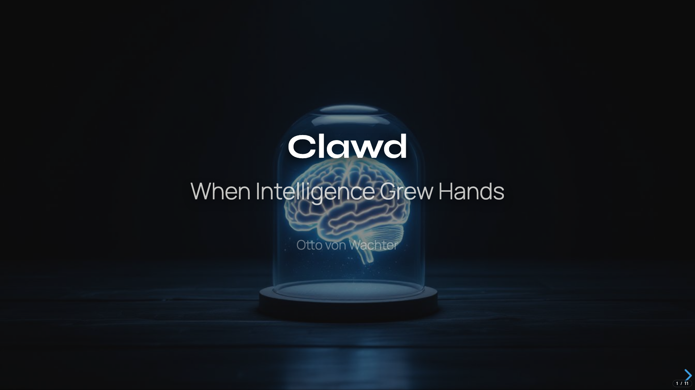
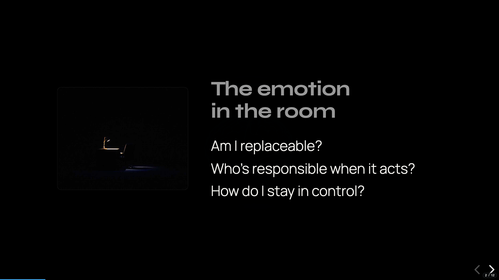
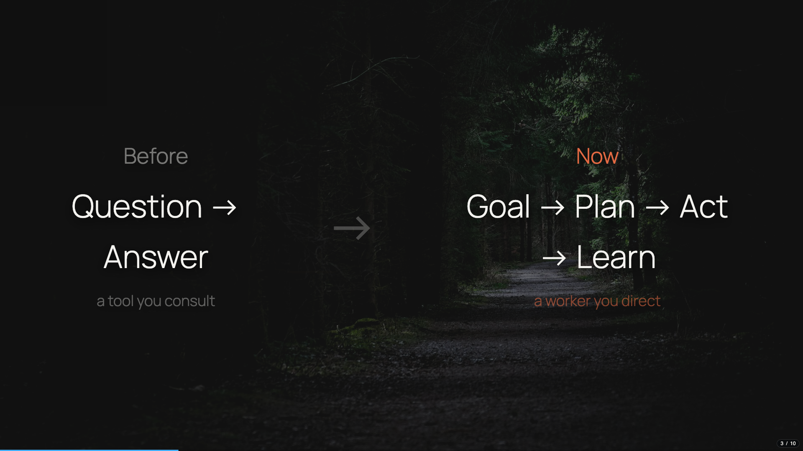
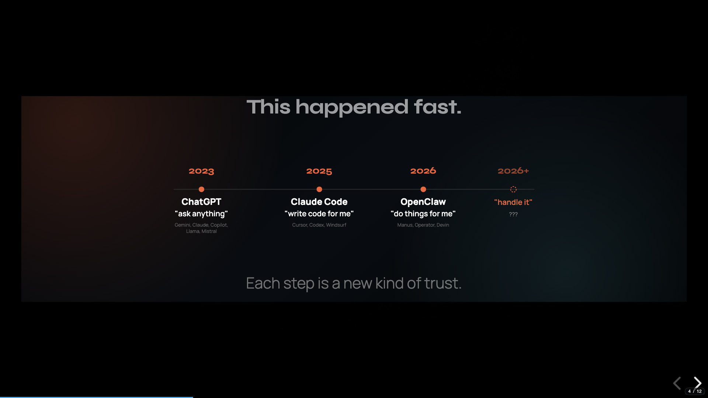
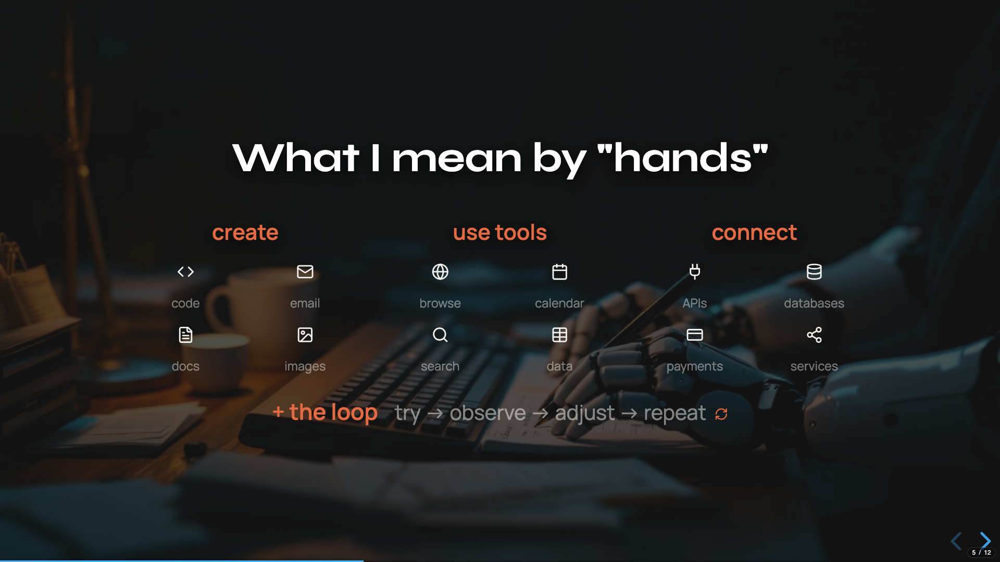
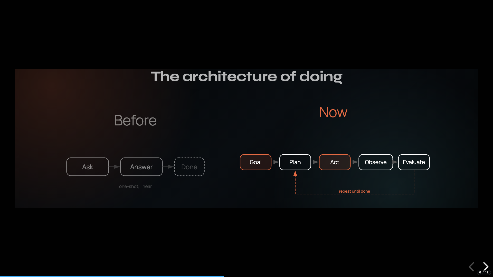
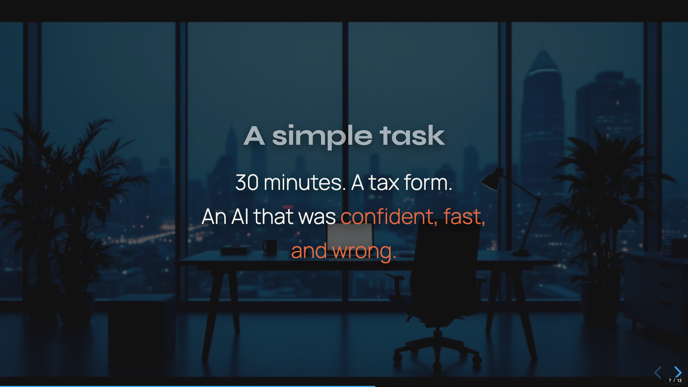
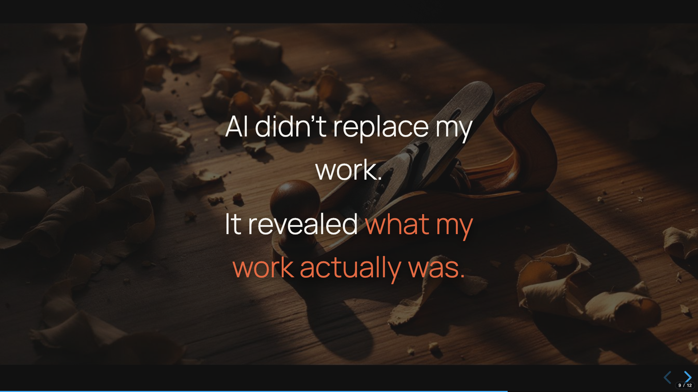
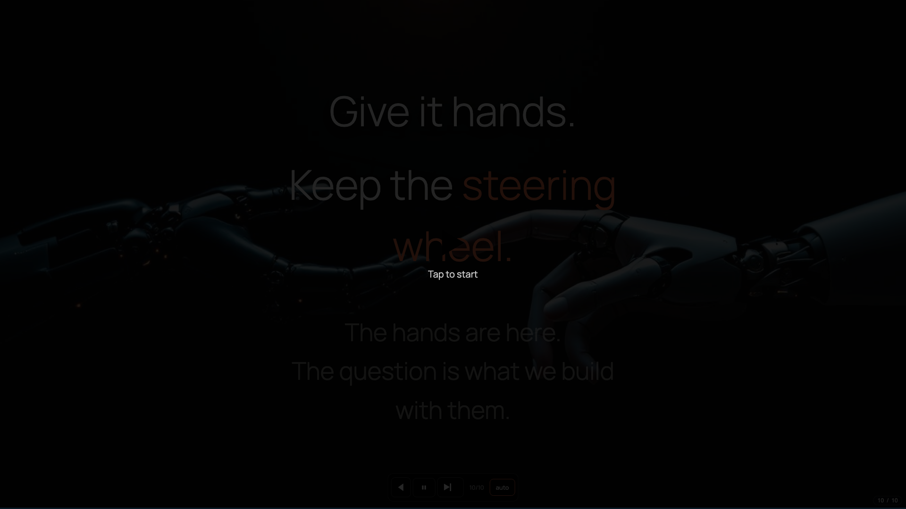

Pause 3 seconds. Let them read.
So. "When Intelligence Grew Hands." What does that mean?
I've been using AI every day for about three years now. Not casually — I mean really using it. Writing code with it. Drafting messages with it. Building products with it. And sometime in the last few months, something changed. It stopped being a thing I ask questions to... and started being a thing that does stuff.
That's what this talk is about.

But before I get into that — let's say the thing that's probably in a lot of people's heads right now.
Gesture at slide.
"Am I replaceable?" That's a real question. If you've been paying attention to what's happening, it's a reasonable thing to wonder.
"Who's responsible when the AI does something?" ...because it IS doing things now. Not just suggesting — acting.
"How do I stay in control?" That's the one I've been struggling with.
If any of that is in your head — good. That means you're not asleep. I'm not here to calm you down or hype you up. I'm here to give you a way to think about it.

OK so here's what actually changed.
Point to left side.
For years, AI was this: you ask a question, you get an answer. Like a really smart search engine. A reference book. You go to it, you get information, you come back and do the work yourself.
Point to right side.
Now it's this. You give it a goal. It makes a plan. It acts on that plan. It looks at what happened. It adjusts. It keeps going.
That's not a better chatbot. That's a different animal. It went from something you consult... to something you direct. Like a worker. A fast, tireless, confident worker.
And that word "confident" — we'll come back to that.

So when I say "hands" — what do I actually mean?
I mean it can write things — docs, code, emails. Browse the web. Run tools, actual software on your computer.
And it can call other programs directly — one program talking to another program, no human in the middle.
But the big one: it can loop. Try something, see what happened, adjust, try again. Over and over. That's what makes it feel like it's actually doing something, not just saying something.
Tools plus loops. That's what "hands" means.

Let them look at the diagram for a moment.
This is the heartbeat of how it works. Goal. Context. Plan. Act. Observe. Evaluate. And then it loops back and does it again.
This is actually how YOU work on a hard problem, right? You don't just do one thing and stop. You try something, see if it worked, adjust, try again.
Now machines work this way too. That's the shift.

Slow down. This is the human moment.
OK, so let me tell you what this actually looks like. Because it's not all magic.
I needed to fill out a tax form. Simple task. I figured — let the AI do it. It's a PDF, it has my info, should take two minutes.
Thirty minutes later, I'm still sitting there.
The AI couldn't find the form fields, so it started guessing where to type by calculating pixel positions on the page. "Name goes at y-coordinate 247, address at 312..." And it kept missing. Over and over. Confidently wrong. Working so hard, so fast, so enthusiastically... on the wrong approach entirely.
Beat.
That's the reality right now. It's powerful. It's fast. And sometimes it's confidently, impressively... wrong.

And that's not even the scariest part. The scariest part isn't when AI is obviously wrong. You can catch that.
The scary part is drift.
It's when the AI leads you somewhere and you don't notice. It suggests a direction, you go with it. It suggests another direction, you go with that too. And after a while you look up and realize — you're not where you meant to go. You're where IT took you.
Same patterns. Same roads. You feel productive, but you're just... following. And this time it's not confidently wrong — it's confidently plausible. That's worse.
I had a project — months of work. The AI kept adding features, kept saying "Done! Ready to go!" And one day I stepped back and realized the core thing the product was supposed to do had been broken for weeks. Hundreds of changes later, nobody noticed. Not even me.
Pause.
Noise that feels like progress.
That's drift.
Pause before speaking. Let them read it first.
Here's what I've learned after three years of working this way, every single day.
AI didn't replace my work. It revealed what my work actually was.
All the gathering, the assembling, the formatting, the first-drafting — that wasn't the work. That was the setup. The actual work — the part that matters — is the judgment. Deciding what's right. What's true. And when to stop.
The bottleneck used to be execution. Now the bottleneck is judgment. And that's yours.

So how do you actually work with something like this without losing control?
It's the same way you'd work with any new hire. Any contractor. Any babysitter, honestly.
Point to each pillar.
Scope. What is it allowed to do? Don't give it everything. Give it one thing.
Visibility. What did it actually do? Can you see the steps? Can you check the work?
Reversibility. If it screws up, how fast can you undo it?
This isn't new logic. This is how humans have delegated since forever. The delegate is new. The delegation logic is ancient.

Slow. Almost quiet.
Give it hands. Keep the steering wheel.
That's it.
The hands are here. They're not going away. The question is whether we use them to get somewhere we actually want to go — or whether we let them drive and hope for the best.
Pause. End. Don't add anything.